flowchart TB
subgraph LLM["Model — Anthropic or xAI"]
T["Emits one typed tool call<br/><b>set_dashboard</b> or <b>set_model</b>"]
end
subgraph RS["R — Shiny process"]
G["<b>is_read_only_sql()</b><br/>reject non-SELECT"]
D[("DuckDB<br/>table <b>data</b>")]
RC["Plot recipe /<br/>tidymodels workflow"]
P["Panes: chart · SQL · code"]
S["Result summary<br/>+ profile"]
end
Q["Your question"] --> T
T --> G
G -->|"SELECT / WITH only"| D
D --> RC
RC --> P
RC --> S
S -->|"numbers R computed"| T
G -.->|"rejected: error text<br/>names allowed columns"| T
Query & model preview
A Shiny workbench where an LLM writes SQL and model specs, R executes them, and every intermediate is on screen. A technical walkthrough.
The model does not analyze your data. It emits a typed tool call — SQL plus a plot or model spec — and R does everything after that.
That split is the whole design. The LLM’s output is a structured argument object validated against a schema, not prose and not code that gets eval()ed. R owns execution, the database, the rendering, and the statistics. What reaches the model afterwards is the result R computed.
Every screenshot below is a live session against midwest — 437 Midwestern counties, 28 columns, from ggplot2. Nothing in the app was tuned for it.
Live at ellmer-practice.ethandbard.com, behind Cloudflare Access on Ethan’s own API key. Everyone else runs it locally with their own key — see the README.
Architecture
One turn is one tool call. There is no agent loop, no multi-step planning, and no path by which the model reaches the database directly.
The dotted edge matters as much as the solid ones: a failed query returns a message naming the legal columns and asking for a retry, so a hallucinated column name becomes a self-correcting round trip rather than a broken pane.
What the model is actually given
A statistical profile, not rows
By default the chat client never receives the table contents. On load, R profiles every column and writes that profile into the system prompt. A describe_data tool lets the model re-read it on demand.
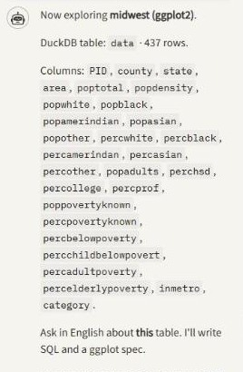
midwest: 437 rows, 28 columns, and the full column list — the model's entire view of the table before it asks anything." class="figure-img">midwest: 437 rows, 28 columns, and the full column list — the model's entire view of the table before it asks anything.Roles are inferred from statistics, with column names used only as a small tiebreak. From R/profile.R:
profile_roles <- c("measure", "count", "category", "clock", "id", "text", "constant")The classifier reads cardinality, type, integer-ness, sign, and missingness. A few of the rules that make it survive unfamiliar tables:
if (d <= 1) return("constant") # single distinct value
if (isTRUE(row$parsed_clock)) return("clock") # parses as a date
# character/factor with a small, stable set of levels
if ((is.character(x) || is.factor(x)) && d >= 2 && d <= 20) return("category")
# count-named non-negative integers beat the small-integer category rule:
# food_delivery$items is 1-8 and is a count, not a grouping
if (is.numeric(x) && isTRUE(row$is_integerish) && isTRUE(row$all_nonneg) && count_name) {
# ... unless it is a 1-10 rating/score, which is a measure
return("count")
}
# numeric encodings of categories: cyl, gear, carb
if (isTRUE(row$is_integerish) && !yearish && d >= 2 && d <= 12 && ratio < 0.15) {
return("category")
}Integer years are explicitly not treated as a clock, and a 1–10 column named rating is a measure rather than a count. These are the cases that break name-matching schemas.
The same profile feeds four consumers — the system prompt, auto_view() (the default chart), auto_features() (default model predictors), and the describe_data tool — so the app’s automatic choices and the model’s suggestions are derived from one description of the data.
A typed tool schema
set_dashboard is an ellmer schema, not a prompt convention. Every field is optional and enum-constrained where possible, and the enums are generated from the same registries the renderer uses — adding a theme is one list entry, not a second schema edit.
plot_spec_type <- function() {
ellmer::type_object(
.description = "What to show. Data mapping for the featured ggplot.",
from = opt_enum(c("detail", "aggregate", "auto"), "Which SQL result to plot."),
geom = opt_enum(c(allowed_geoms, "auto"), "ggplot geom. bar is accepted as col."),
x = opt_string("Column for x, from the chosen SQL result."),
y = opt_string("Column for y. Omit for histogram/density."),
color = opt_string("Optional color/fill column."),
facet = opt_string("Facet wrap column, or the grid's row variable."),
smooth = opt_enum(c("none", "lm", "loess"), "Add a smooth to point/jitter charts."),
# ... sort, position, titles, annotations, reference lines, bounds
.required = FALSE
)
}The geom enum is closed:
allowed_geoms <- c(
"col", "line", "point", "histogram", "boxplot", "density", "area",
"violin", "jitter", "tile", "hex", "bin2d", "ecdf", "qq",
"errorbar", "pointrange", "step", "ribbon"
)Style is a separate, sticky channel. style_spec_type() carries theme, palette, accent, highlight, legend position, scale transforms, number formats and label sizes. Merge semantics are partial-update: only the fields sent are overwritten, and they persist until reset.
That is what makes “now make it dark” a one-field call. The model omits both SQL strings and the entire plot mapping; R reuses the last result set and re-renders. From app.R:
reused <- reuse_last_queries(detail, agg, list(
detail_df = isolate(dash$detail_df),
aggregate_df = isolate(dash$aggregate_df),
detail_sql = isolate(dash$detail_sql),
aggregate_sql = isolate(dash$aggregate_sql)
))
if (!detail$used && !agg$used) {
return("No chart to restyle yet. Ask a data question first, or provide SQL.")
}SQL it is allowed to run
Model-authored SQL is gated before it reaches DuckDB. The interesting part is the order of operations — comments and string literals are stripped first, so WHERE note = 'create' is a legal read rather than a false positive:
strip_sql_noise <- function(sql) {
stripped <- gsub("--[^\\n]*", " ", sql)
stripped <- gsub("/\\*.*?\\*/", " ", stripped)
stripped <- gsub("'([^']|'')*'", "''", stripped) # single-quoted literals
stripped <- gsub('"([^"]|"")*"', '""', stripped) # double-quoted identifiers
trimws(stripped)
}
is_read_only_sql <- function(sql) {
stripped <- strip_sql_noise(sql)
if (!grepl("^(with|select)\\b", stripped, ignore.case = TRUE)) return(FALSE)
# a second statement after a SELECT: `SELECT 1; DROP TABLE data`
rest <- sub("^(with|select)\\b", "", stripped, ignore.case = TRUE)
if (grepl(";", rest)) return(FALSE)
!grepl("\\b(insert|update|delete|drop|alter|create|attach|copy|pragma|grant|truncate)\\b",
stripped, ignore.case = TRUE)
}A source comment records why this is a keyword gate rather than a read-only connection: on Windows, DuckDB cannot ATTACH the same file while a writer is open, and an in-process read_only = TRUE handle still accepted DROP in testing.
Explore: one question, three synced panes
The Explore page opens with a chart nobody asked for — auto_view() picks it from the profile, so the page is never empty and the model has something to describe.
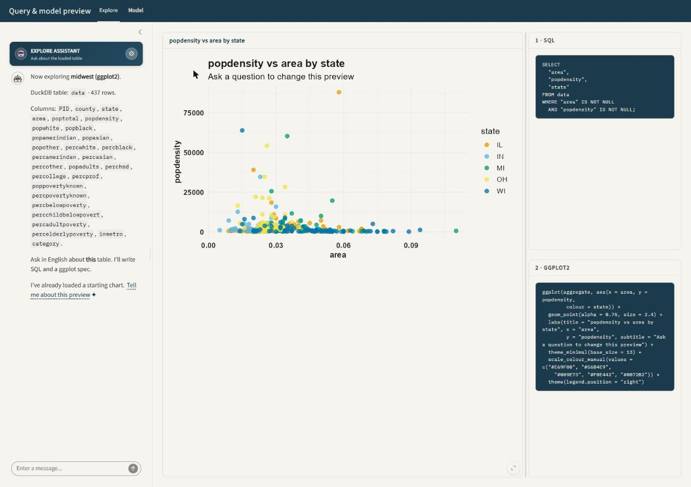
midwest on load.auto_view() chose popdensity against area colored by state; the SQL and ggplot2 panes are already populated. Chat left, chart centre, code right — the split is drag-resizable." class="figure-img">midwest on load. auto_view() chose popdensity against area colored by state; the SQL and ggplot2 panes are already populated. Chat left, chart centre, code right — the split is drag-resizable.Then a question. “Update the dashboard: average percent college-educated by state, as a bar chart” fires exactly one set_dashboard call:

Nothing mapped “college-educated” to a column by hand. percollege was found in the profile.
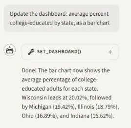
SET_DASHBOARD() call itself. Expanding it reveals the exact arguments the model emitted." class="figure-img">SET_DASHBOARD() call itself. Expanding it reveals the exact arguments the model emitted.The single-recipe invariant
This is the claim worth being precise about. The chart pane and the code pane are not generated independently — they are two renderings of one plot recipe. The code on screen is the code that ran.
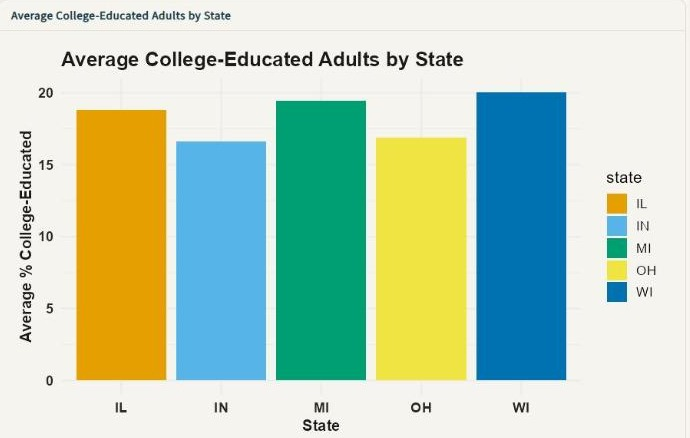
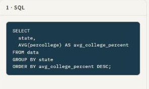
format_sql()." class="figure-img">format_sql().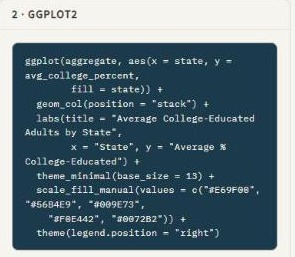
The SQL is the model’s, reformatted for reading:
SELECT
state,
AVG(percollege) AS avg_college_percent
FROM data
GROUP BY state
ORDER BY avg_college_percent DESC;The ggplot2 pane is generated, not transcribed — paste it into a script and you get the same figure back:
ggplot(aggregate, aes(x = state, y = avg_college_percent, fill = state)) +
geom_col(position = "stack") +
labs(title = "Average College-Educated Adults by State",
x = "State", y = "Average % College-Educated") +
theme_minimal(base_size = 13) +
scale_fill_manual(values = c("#E69F00", "#56B4E9", "#009E73",
"#F0E442", "#0072B2")) +
theme(legend.position = "right")The palette is Okabe–Ito. That is the default, not a request.
Asking for a relationship rather than a chart type
“Scatter of percent college-educated vs percent below poverty, colored by state, with a linear smooth” — one sentence, three schema fields (geom = "point", color = "state", smooth = "lm").
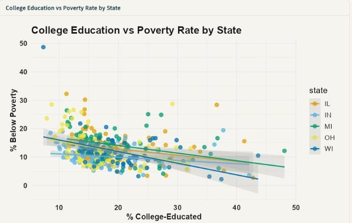
geom_point() +geom_smooth(method = "lm") fit per state. More college-educated adults, less poverty — a negative slope in all five states, and the per-state fits differ enough to be worth noticing." class="figure-img">geom_point() + geom_smooth(method = "lm") fit per state. More college-educated adults, less poverty — a negative slope in all five states, and the per-state fits differ enough to be worth noticing.Because style is sticky, the Okabe–Ito palette and theme carried over from the previous question without being restated. Flipping Interactive (Plotly) in the sidebar renders the same recipe through plotly with hover and zoom.
Model: preview fits with a named baseline
The Model page fits a small tidymodels workflow and reports holdout metrics against a named baseline. The baseline is the point — a metric without one is not interpretable, and this app refuses to show one alone.
set_model accepts these methods:
allowed_ml_methods <- c(
"regression", "classification", "forecast",
"poisson", "tree", "forest", "ridge", "elastic", "gam",
"test", "pca", "kmeans", "correlation"
)and these diagnostic plots:
allowed_ml_plots <- c(
"coef", "actual_pred", "residual", "forecast", "cv", "subgroup",
"roc", "pr", "confusion", "calibration",
"tree", "importance", "pdp", "path",
"scree", "biplot", "cluster", "elbow",
"heatmap", "stl", "test"
)Method names are aliased (lm, linear, ols, regress → regression; glm, logistic → classification), so the model does not have to guess the canonical token.
Regression, and a result that admits it is weak
“Predict percent below poverty from percent college-educated, population density, and metro status.”
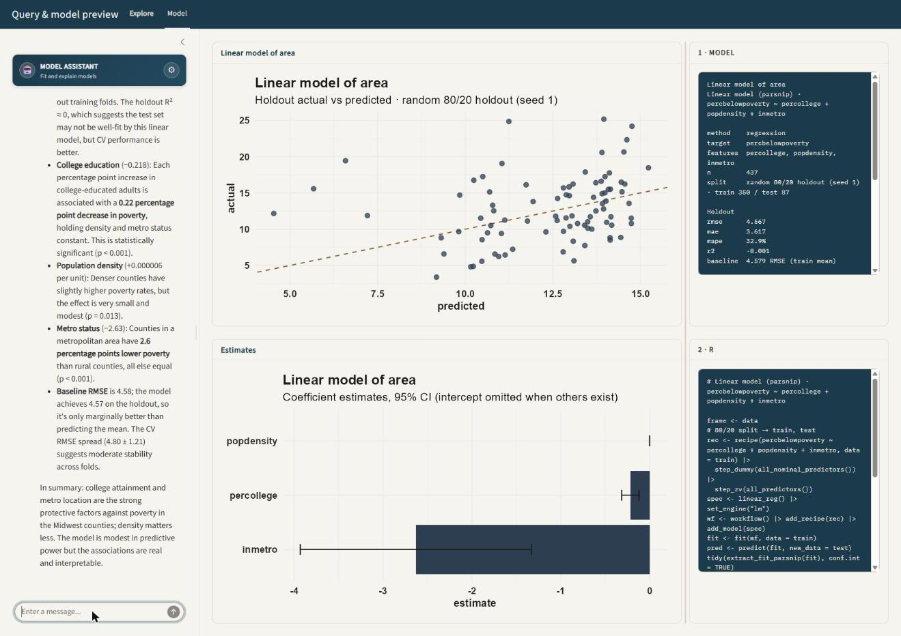
The spec pane reads:
method regression
target percbelowpoverty
features percollege, popdensity, inmetro
n 437
split random 80/20 holdout (seed 1) · train 350 / test 87
Holdout
rmse 4.567
mae 3.617
mape 32.9%
r2 -0.001
baseline 4.579 RMSE (train mean)RMSE 4.567 against a train-mean baseline of 4.579, and R² ≈ 0. The model barely beats guessing the average, and the pane says so. Reported alone, R² near zero would look like a bug; next to a baseline it reads correctly as a weak predictor.
The coefficients are still real and still interpretable: each additional percentage point of college attainment is associated with about 0.22 points less poverty (p < 0.001), and metro counties run 2.6 points lower than rural ones. Modest predictive power and genuine associations are not the same claim, and separating them is exactly what the baseline buys you.
Cross-validation runs on training folds only. The R pane prints the actual call:
frame <- data
# 80/20 split -> train, test
rec <- recipe(percbelowpoverty ~ percollege + popdensity + inmetro, data = train) |>
step_dummy(all_nominal_predictors()) |>
step_zv(all_predictors())
spec <- linear_reg() |> set_engine("lm")
wf <- workflow() |> add_recipe(rec) |> add_model(spec)
fit <- fit(wf, data = train)
pred <- predict(fit, new_data = test)
tidy(extract_fit_parsnip(fit), conf.int = TRUE)Classification
“Classify whether a county is in a metro area, and show the ROC curve.”
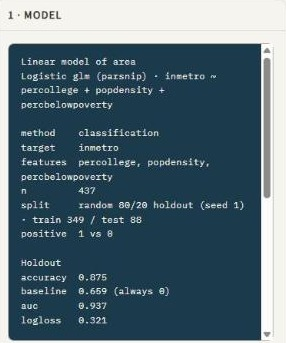
1 vs 0." class="figure-img">1 vs 0.Accuracy alone would be misleading here: the classes are unbalanced enough that always guessing non-metro scores 0.669. The gap from 0.669 to 0.875, plus AUC 0.937 and cross-validated AUC 0.933 ± 0.005 on the training folds, is the real result.
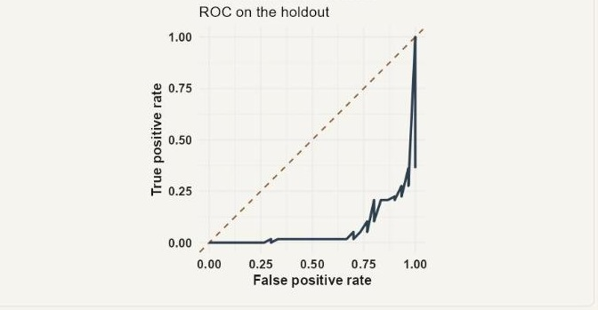
WarningKnown issue: the ROC curve is drawn with the positive class flipped
The fit reports AUC 0.937, but the plotted curve falls below the diagonal — an area of roughly 0.063, which is 1 − 0.937. The metric is computed against positive 1 vs 0; the curve is being traced against the other class. The numbers in the metrics pane are correct, and the diagnostic plot is not. Left visible here because it is a good illustration of why the app prints its metrics and its call next to every figure — the disagreement is detectable precisely because both are on screen.
A model you can read out loud
“Show me a decision tree for metro status.”
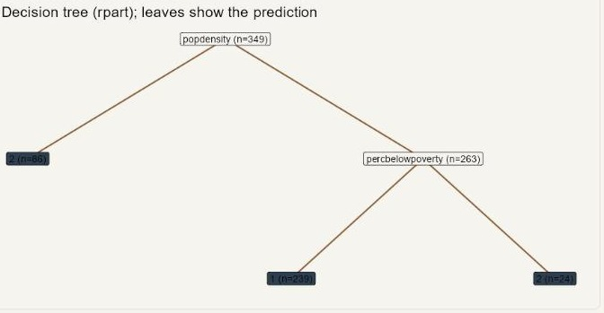
rpart tree, depth-capped at 4 so the preview stays legible. Population density splits first (importance 75.4), then poverty rate." class="figure-img">rpart tree, depth-capped at 4 so the preview stays legible. Population density splits first (importance 75.4), then poverty rate.CV accuracy 0.868 against the logistic model’s 0.875; CV AUC 0.864 against 0.937. The tree is slightly worse and dramatically easier to explain — and because both fits report the same metrics, the size of that trade is visible rather than asserted.
Unsupervised, same tool
“Cluster the counties on their numeric columns.” — 25 numeric columns, k chosen by the model at 3, projected onto the first two principal components.

PCA, k-means and the correlation heatmap all route through set_model. When a view has no coefficient table, the estimates pane says so rather than rendering an empty chart.
“Is the difference real?” is a first-class question
Significance questions dispatch to a test rather than a predictor. The choice among t-test, ANOVA, chi-square and correlation comes from the column roles in the profile.
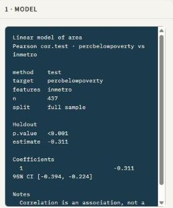
Pearson cor.test on the full sample: estimate −0.311, 95% CI [−0.394, −0.224], p < 0.001 — with the caveat printed by R, not written by the model." class="figure-img">Pearson cor.test on the full sample: estimate −0.311, 95% CI [−0.394, −0.224], p < 0.001 — with the caveat printed by R, not written by the model.Metro counties run roughly 3–4 percentage points lower on poverty and zero is nowhere near the interval. The result pane carries its own caveat — correlation is an association, not a cause — emitted by R as part of the test output, so it cannot be omitted by a model in a hurry.
State, sessions, and the provider swap
Three implementation details that are easy to get wrong and are worth reading the source for.
The DuckDB table is process-wide
There is one table named data for the whole Shiny process. A session’s reactiveValues used to be seeded with the boot-time starter table regardless of what a previous session had loaded — so a reload would claim orders.csv while the real table held something else. The fix is a single process-level source of truth that every session reads at start:
current_source <- local({
env <- new.env(parent = emptyenv())
env$label <- "orders.csv"
env$columns <- names(starter)
env$n <- nrow(starter)
env$preview <- starter
env
})apply_loaded_table() updates it on every load; each new session calls that function against it rather than against the starter.
querychat gets the connection, not a data frame
Passing a data frame to QueryChat$new() wraps it in a DataFrameSource that freezes rows at construction. Since each session clones its chat client once at startup, that snapshot would go stale on the next upload. Passing the live connection builds a DBISource whose query tool re-reads the table on every call:
qc <- QueryChat$new(
dash_con, # live connection, not a snapshot
table_name = "data",
client = client,
tools = "query",
greeting = "greeting.md",
extra_instructions = build_analyst_prompt(names(starter), nrow(starter),
"orders.csv", df = starter)
)Swapping providers mid-session
The sidebar switches between the Anthropic and xAI APIs without rebuilding the querychat module, by replacing the provider inside the live Chat object. This reaches into ellmer internals and is version-guarded accordingly:
attach_chat_provider <- function(live_chat, new_chat) {
if (!ellmer_supported("0.4.2")) {
warning("ellmer < 0.4.2: in-place provider swap is unsupported.", call. = FALSE)
return(FALSE)
}
tryCatch({
live_chat$.__enclos_env__$private$provider <- new_chat$get_provider()
live_chat$set_turns(list())
TRUE
}, error = function(e) FALSE)
}If the swap fails the user gets a notification telling them to restart, rather than a silent fallback to the old model.
| Provider | Models in the picker |
|---|---|
| Anthropic (Claude) | Haiku 4.5 (default), Sonnet 4.6, Sonnet 5 |
| xAI (Grok) | Grok 4.5 (default), Grok 4.6, Grok 4.3 |
Everything shown on this page ran on Claude Haiku 4.5. This bills the developer API, not a Claude.ai or grok.com subscription.
The code
About 250 KB of R across a dozen files. The chat layer is the thin part.
| File | Lines | Role |
|---|---|---|
R/model-view.R |
1938 | Method/plot dispatch, spec formatting, metric reporting |
R/dashboard-view.R |
899 | Geom registry, spec resolution, auto-view |
R/model-recipe.R |
782 | Model plot recipes |
R/plot-recipe.R |
766 | One recipe → chart pane and code pane |
R/tools.R |
459 | Typed tool schemas, sticky style merge |
R/profile.R |
451 | Column roles inferred from statistics |
R/model-tidymodels.R |
360 | parsnip / recipes / workflows / yardstick |
R/stats-test.R |
206 | t-test, ANOVA, chi-square, correlation |
R/unsupervised.R |
155 | PCA, k-means, correlation heatmap |
R/sql.R |
156 | DuckDB helpers and the read-only gate |
R/providers.R |
129 | Provider catalog, in-place client swap |
app.R |
1186 | Shiny UI, tool registration, session wiring |
Judgment that would bloat the schema lives in markdown instead: extra-instructions.md covers when to slice versus break down and how to read a tool return; ml-instructions.md covers when to test versus forecast versus lasso. greeting.md and ml-greeting.md are static, so startup spends no tokens.
tests/testthat/ holds 12 files of characterization and agreement tests over the tool layer — including that the generated code pane agrees with the rendered chart.
Run it
# 1. Put a key in your user .Renviron (usethis::edit_r_environ()), then restart R:
# ANTHROPIC_API_KEY=sk-ant-your-key-here
# XAI_API_KEY=xai-your-key-here
# 2. From the ellmer-practice folder as working directory:
source("setup.R") # install packages
source("check-key.R") # optional: prove the key works, for a fraction of a cent
shiny::runApp()$5 of API credit covers a long session. Full setup notes and a troubleshooting table are in the repository README.
Limits
- One browser session. The DuckDB table is process-wide, so a second tab overwrites the first tab’s data. This is a workbench, not a multi-user service.
- Preview fits, not pipelines. An 80/20 holdout, five-fold CV on the training rows, sensible defaults. Enough to see the shape of a problem; not a modeling pass you should ship.
- The gate is a keyword gate.
is_read_only_sql()strips literals and comments before checking, which handles the obvious evasions, but it is a parser approximation rather than a permission boundary. The threat model here is a confused model, not a hostile one. - The model still chooses. It writes the SQL and picks the features. Showing the query, the spec, and the call is what makes those choices checkable — and as the ROC note above shows, the panes catch disagreements that a single number would hide.